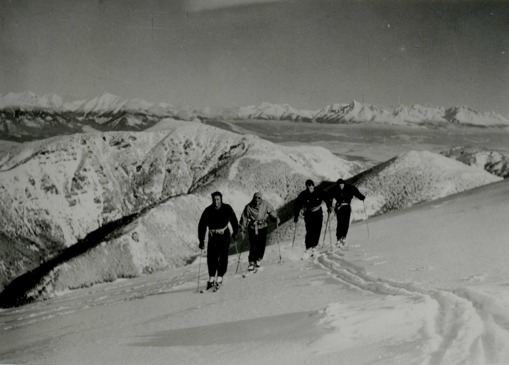

Igen, létezik egy sportág, amit bizony nem űztek „már az ókorban is…” Viszont lehet csodálkozni emberek,
mert a sílécet hamarabb feltaláltuk, mint a kereket. Több, mint tízezer évvel ezelőtt alakulhatott ki a
síelés és az Ázsiából bevándorolt népek közvetítésével került a mai skandináv területekre. Eredetileg a
síléc őse a hótalp volt, mígnem rájöttünk ara, hogy gyorsabban siklik a havon, ha hosszában megnyújtjuk
alakját és az elejét felfelé íveljük.
Évezredeken keresztül a síelés vadászattal,
közlekedéssel
összekötött tevékenység volt. Aztán a norvégok nem bírtak magukkal és rájöttek, hogy a síléccel
lesiklani, ugratni nagyszerű élvezet is lehet. Ahol pedig sok a tesztoszteron, ott előbb utóbb kialakul
a versengés, így hát a 19. század második felében a sport a versengés eszközévé is vált. A síelés
atyjai, a norvégok síversenyeken mérték össze tudásukat, egyre több sí egyesület alakult. Az igaz
népszerűséget a sízésnek azonban a híressé vált F. Nansen sarkkutató hozta meg. A grönlandi
expedíciójának egy könyvben állított emléket, melynek hatására a síelés, mint sportág robbanásszerűen
kedveltté vált kontinensünkön.

Fejlődés
A sízés aztán különböző technikákra szakosodott, kialakult a síugrás és a sífutás. Mivel kontinensünk
máig legnépszerűbb síterepére, az Alpok lejtőire a norvégok által kifejlesztett hosszú síléccel való
síelés nem volt alkalmas, kialakult a hegyi sízés technikája is, amely másfajta sífelszerelés
használatát igényelte. Elkezdett kettéválni a szórakozásból síelők és a versenyzők technikája is.
Míg az
érmekért küzdőknek az volt a célja, hogy minél hamarabb lejussanak a pályán, addig az amatőröknek
elsősorban a síelés élvezetet jelentett és főként a biztonságos és élvezetes lesiklásra koncentráltak
technikailag is. A versengés szelleme segített persze tökéletesíteni a sífelszereléseket is, az újabb és
újabb sílécek kialakulásával különböző síoktatási módszerek és sítanulási technikák jelentek meg. Ma már
léteznek héjszerkezetes sílécek és „kanyarsí” is.
A síelés fontos képességgé vált, a második világháború befejezéséig kötelező tananyagként oktatták
Európa több országában és a hadseregeknek is létezett síző osztaga. A polgárosodással azonban megnőtt a
szabadidős síelés iránti kereslet is, kialakultak a síközpontok és a síeléssel kapcsolatos turizmus is.
Magyarországon
Magyar vonatkozásban feltétlenül meg kell említenünk a síelés nagy doyenjét, Chernel Istvánt, aki
Kőszegen a 19. században kiadta „A lábszánkázás kézikönyve” címmel szaktanácsait. Azokban a híres
hetvenes években nálunk is divattá vált a síelés. Mivel hazánk természeti adottságai nem igazán
kedvezőek a sízéshez, a legnépszerűbb síterepek közelségük miatt Szlovéniában, Szlovákiában és
Ausztriában vannak.